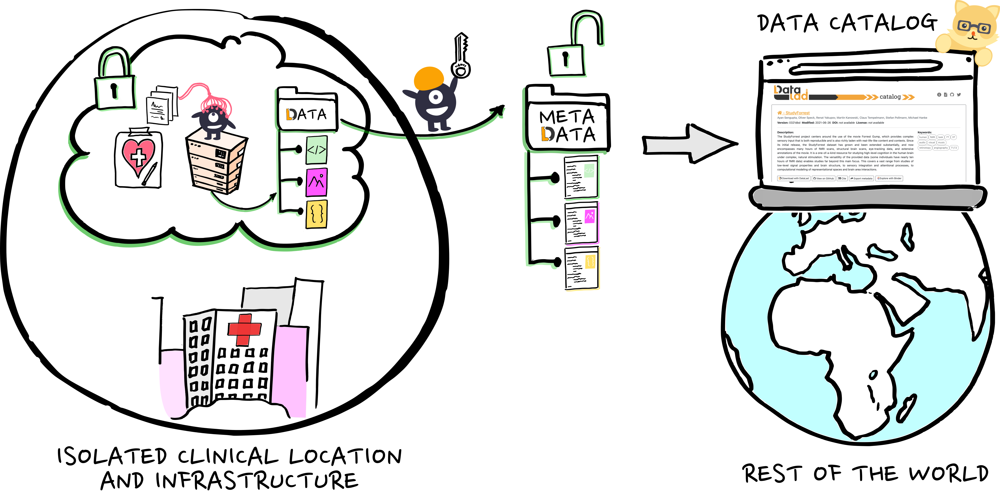
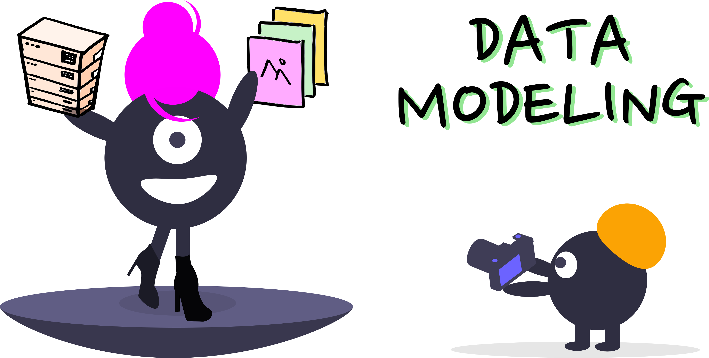

Linked metadata as the key to
F.A.I.R., secure, distributed, and collaborative
Research Data Management

 @jsheunis
@jsheunis
 jsheunis
jsheunis
Psychoinformatics lab,
Institute of Neuroscience and Medicine, Brain & Behavior (INM-7)
Research Center Jülich, Germany
Acknowledgements
|
Funders


|
|
Collaborators
|
|
The ultimate goal of research data management
BUT ALSO: The ongoing existential crisis of open scientists
AN OPPORTUNITY:
can metadata solve this?
can metadata solve this?
AN OPPORTUNITY:
can metadata solve this?
can metadata solve this?
So what is metadata actually?
Where do we source inherent metadata?
Where do we source inherent metadata?
Where do we source inherent metadata?
Where do we source inherent metadata?
Where do we source inherent metadata?
💻 Demo 💻
inherent metadata with DataLad
inherent metadata with DataLad
Example: a random dataset from OpenNeuro
datalad clone https://github.com/OpenNeuroDatasets/ds005498.git mydata
cd mydata
du -sh
ls
open .
git annex info
datalad get sub-NTHC1016/ses-1/anat/sub-NTHC1016_ses-1_T1w.nii.gz
Where do we source contextual metadata?
TODO
A benefit of structured and actionable metadata:
automated catalog generation

automated catalog generation
A benefit of structured and actionable metadata:
automated catalog generation
automated catalog generation
A benefit of structured and actionable metadata:
automated catalog generation
Examples of metadata-driven catalogs:
automated catalog generation
- Google Dataset Search: datasetsearch.research.google.com
- Jülich Data (dataverse): data.fz-juelich.de
- DataLad Catalog: data.sfb1451.de
💻 Demo 💻
SFB1451 Consortium Catalog
Practically, how do we get actionable metadata?
- It comes down to serialization, via...
- Researchers and software pipelines
- But first: we have to provide structure to metadata
- allows intuitive manual forms that validate on entry and that minimize effort and generality
- allows automated metadata extraction
For structure,
we have to model our data

we have to model our data
For structure,
we have to model our data
we have to model our data
With a schema...
comes great possibilities
comes great possibilities
With a schema...
comes great possibilities
comes great possibilities
DEMO TODO
- LinkML
- Datalad concepts (ontologies, vocabularies)
- Shacl
- Shacl-vue
- RDF
What about metadata harmonization?
- We make our metadata speak the lingua franca...
- ...thereby making it interoperable with the wider ecosystem of online metadata...
- ...which allows harmonization across standards...
- ...and eventually representing information in a uniform way.
Resource description framework
for semantic and linked metadata
for semantic and linked metadata
Resource description framework
for semantic and linked metadata
for semantic and linked metadata